MitoPilot takes you from raw Illumina paired-end reads to polished mitogenome records ready for submission to NCBI GenBank. The heavy lifting is a Nextflow pipeline; you drive it from an R Shiny app that shows you every sample, assembly, and annotation. MitoPilot automatically curates annotations based on clade-specific rulesets and also allows you to manually adjust annotations when needed.
This page walks the whole pipeline using the built-in test project, then shows you how to start a project with your own data.
HYDRA Boxes like this one flag the places where Smithsonian Hydra computing cluster differs from a generic setup. First time on Hydra? Work through the Get an R session and Install Nextflow sections before starting this tutorial.
What you need
| Requirement | Notes |
|---|---|
| R >= 4.4.0 | RStudio is recommended but not required |
| Nextflow 24.10.x - 25.10.x | Needs Java 17 or newer |
| Docker or Singularity | Containerized execution is handled by Nextflow |
| Disk space | About 15 GB for the container image, plus room for your data |
| Internet access | Reference annotations and taxonomy are fetched from NCBI |
Note. MitoPilot checks your Nextflow version when
the package loads and when you create or open a project. If the version
is too old the package refuses to load; if it is too new, MitoPilot
quietly pins NXF_VER to a version that works.
Install
Everything in this tutorial happens in R, preferably from RStudio. The only steps that need a terminal are installing Nextflow and, on a cluster, checking on submitted jobs; those are called out where they come up.
Open R and run the following.
if (!requireNamespace("BiocManager", quietly = TRUE)) {
install.packages("BiocManager")
}
BiocManager::install("Smithsonian/MitoPilot", ask = FALSE)The first install pulls a long list of dependencies and takes a while. Warnings about system library paths that are not writeable are usually harmless.
To update later:
remove.packages("MitoPilot")
BiocManager::install("Smithsonian/MitoPilot")
.rs.restartR() # or restart R yourselfTip. Each MitoPilot version pairs with a matching
container image. If needed, you can clear your container cache
(docker image prune, or singularity cache
clean) to ensure a new image is pulled. Careful, this will clear
other cached images aside from MitoPilot.
Load the package:
You should see a welcome message naming the Nextflow version
MitoPilot will use. If Nextflow cannot be found, make sure it is on your
PATH in the same R session
(Sys.which("nextflow")). See HPC
cluster support if you are working on a cluster.
HYDRA Run
hydra_setup() once per session. RStudio Server
sessions on Hydra start with a stripped PATH that leaves
out the job scheduler engine, Java, and your ~/bin, so
Nextflow cannot find qsub and job submission fails. So
before creating a project or opening the app, call the following
function:
library(MitoPilot)
hydra_setup()It puts the Hydra Java and job scheduler directories at the front of
your PATH and pins a compatible Nextflow version for the
session. It has no effect anywhere else, and warns if you are not on
Hydra.
Run the test project
MitoPilot ships with a small test dataset: 15 samples of pre-filtered Illumina reads, mostly marine fishes. It is deliberately messy. Some samples assemble cleanly, one has far too little data, one produces two competing assemblies, and two produce fragmented assemblies. This allows you to see more complex situations that need user judgment.
library(MitoPilot)
# Anywhere you have space. MitoPilot creates the directory if needed.
wd <- "~/MitoPilot_test/run_01"
new_test_project(
path = wd,
executor = "local",
full_size = FALSE,
Rproj = FALSE
)executor = "local" runs everything on the machine you
are sitting at and uses Docker. To run on a cluster instead, see HPC cluster support and pass the matching
executor name. full_size = FALSE uses the small
pre-filtered reads that ship with the package; TRUE
downloads about 10 GB of raw data from ENA, takes much longer to
process.
MitoPilot lists the samples as it sets them up, then writes a hidden
.config file holding the Nextflow settings for the project
directory. The defaults are fine for the test project.
HYDRA Use the Hydra executor,
and pick the right disk. Pass executor =
“NMNH_Hydra” so work is dispatched to compute nodes instead of
running on the login or RStudio node. Put projects under
/pool or /scratch. Home directories are far
too small for Nextflow work directories, and projects cannot be run from
/store.
Open the app
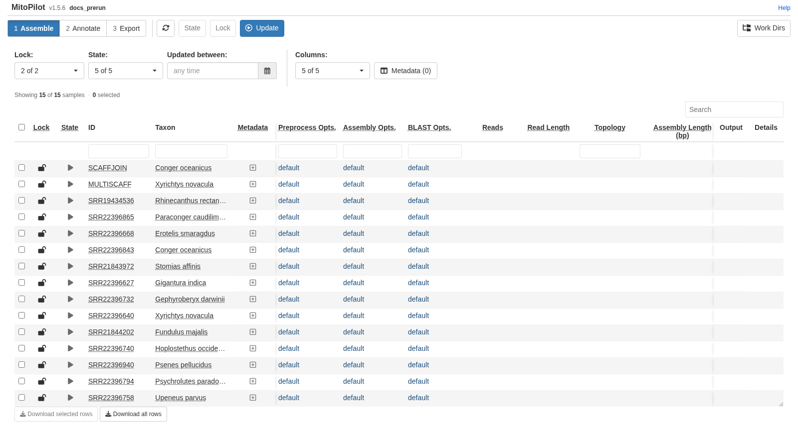
This is a fresh project, so the result columns are still empty: the sample metadata comes from your mapping file, and everything else fills in as the pipeline runs.
Each row is a sample. The dropdown at the top left switches between the three pipeline modules, Assemble, Annotate, and Export, which you work through in that order. The circular arrow refreshes the table.
Two icons sit to the left of each sample ID:
-
The lock. Unlocked samples are available for the
next pipeline run to process. Locking a sample freezes it in the current
module and makes it available for the next module. Select samples and
use the
LOCKbutton to toggle. -
The state. Status of the sample in the current
module. The pipeline sets these automatically, but you can override them
with the
STATEbutton. This is how you can park samples you do not want to process yet or reset samples that have already completed the pipeline.
Clicking a column header sorts alphanumerically. The search box at the top right filters everything, and most columns have their own filter box.
Assemble
The Assemble module cleans the reads, builds mitogenome assemblies, maps the reads to the assembly to calculate coverage, and BLASTs each assembly against a database of metazoan mitogenomes to find its closest published relative.
Set the options
Every processing step has an options set, shown as a link in the
sample table. Click the default link in the
Preprocess Opts. column to see how the reads will be
cleaned.
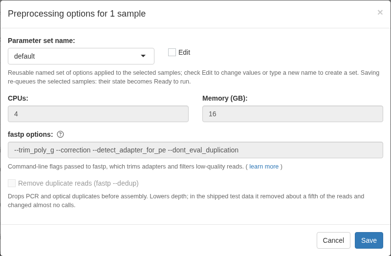
The Assembly Opts. column works the same way, and controls the assembler.
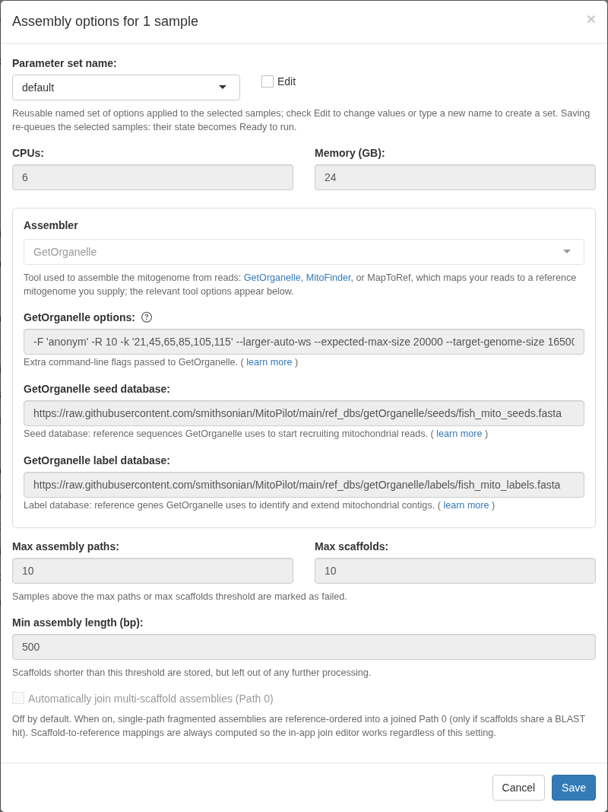
Nothing is editable until you tick Edit. The important controls:
- CPUs and Memory per sample. Raise memory if samples fail with out-of-memory errors.
- Assembler. GetOrganelle by default, or MitoFinder. GetOrganelle only assembles reads it recognizes as mitochondrial, which makes it fast but dependent on good reference databases. MitoFinder assembles everything, which is much slower but can work better for groups with few reference mitogenomes.
-
Seeds and Labels databases. The reference sequences
GetOrganelle uses to recruit and extend mitochondrial reads. The
defaults are fish; for other groups, build your own with
custom_assembly_db()(see custom databases). -
MitoFinder reference database. Only used when the
assembler is MitoFinder. A GenBank-format (
.gb) file of one or more reference mitogenomes that MitoFinder uses to identify mitochondrial contigs. The default is the zebrafish mitogenome (NC_002333.2), so for anything other than a fish, supply a reference from your own group.custom_assembly_db()can build this file too. - Max assembly paths / Max scaffolds. Samples are marked failed instead of continuing in the pipeline if they exceed these thresholds.
- Automatically join multi-scaffold assemblies. Off by default, and worth leaving off until you understand your data. See multiple paths and scaffolds.
Options are saved as named, reusable sets. To make one, tick Edit, change what you want, type a new name in the Parameter set name box, and click Update. That name then appears in the dropdown for any sample. Different samples can use different sets, which can allow you to selectively increase memory usage for difficult samples.
For the test project the defaults are fine.
HYDRA Raise the memory defaults before running. The package defaults are tuned for a laptop and are too low for Hydra’s queues. For the test project, edit the options sets and use:
- Preprocess Opts. memory 40 GB
- Assembly Opts. memory 120 GB
Tick Edit, change the memory, give the set a name
such as hydra, and click Update so it
applies to every selected sample.
HYDRA CPUs and memory are per-job requests. On Hydra these values become the job scheduler’s resource request, so asking for more memory than a queue allows will leave jobs pending rather than make them faster. The Hydra config also flags high-memory steps automatically when a request crosses the per-CPU threshold.
Run the workflow
Click UPDATE at the top of the window. MitoPilot shows the Nextflow command it is about to run and how many samples it applies to.
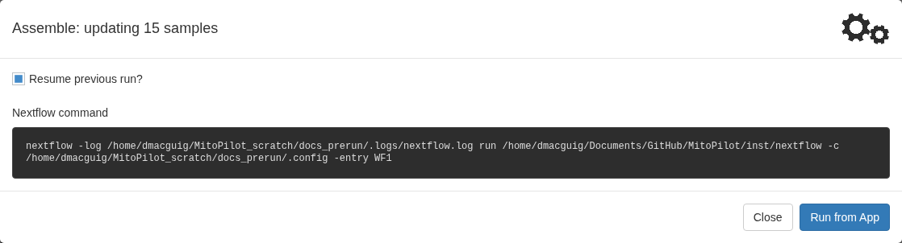
Run from App runs the pipeline in your R session. The Progress window updates as samples move through the steps, and the spinning gears in the corner mean work is still happening. This is the simplest option, and the right one for a project this size.
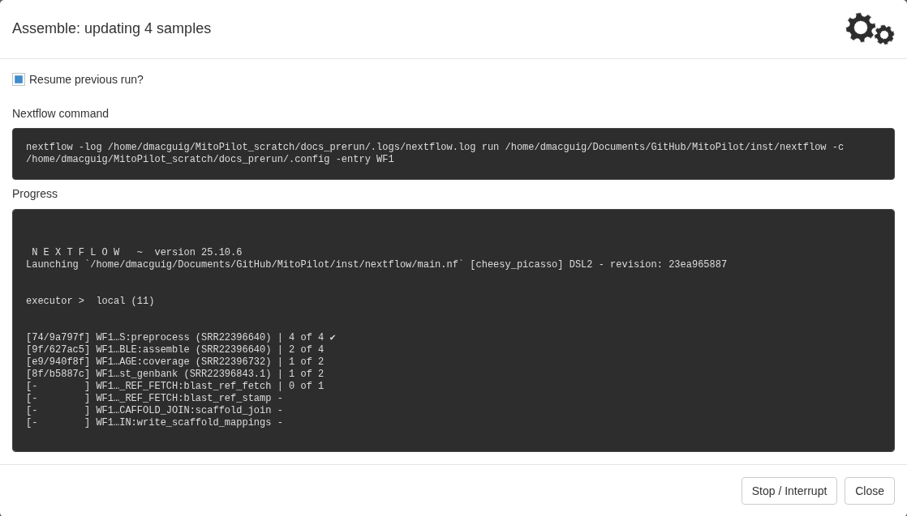
Each line is a pipeline step, with a count of how many samples have finished it. Stop / Interrupt halts the run; you can resume it later without redoing completed work.
Warning. Running from the app ties the pipeline to the app session. Closing the MitoPilot app will kill the pipeline. For large projects, or anything on a cluster, save or submit a job script instead so the run survives a dropped connection. See HPC cluster support.
HYDRA Submit as Job.
MitoPilot detects Hydra and adds a Submit as Job button
next to Run from App. It submits the workflow to the
cluster for you, so the run keeps going after you close the app or lose
your connection. Monitor it by running qstat in a terminal
(the Terminal tab in RStudio works) and reading the log files in the
project’s .logs directory, then reopen the app when it
finishes. For anything beyond a few dozen samples, use this rather than
running from the app.
Assemble runs three steps per sample: read pre-processing with fastp, assembly with GetOrganelle or MitoFinder, and read mapping with bowtie2 to compute depth and error rates. It then BLASTs each assembly to find its closest published relative, and fetches that reference’s annotations from NCBI. Nextflow runs all samples in parallel through these steps.
Failures are normal and often mean a sample ran out of memory. Common error messages are covered in the FAQ and troubleshooting articles.
Finding the reference: local vs remote BLAST
The reference search runs against a local database of metazoan mitogenomes bundled into the MitoPilot container, so it needs no network and finishes in seconds rather than the minutes-to-hours a queued NCBI search can take. This is the default, and for most projects it is all you need.
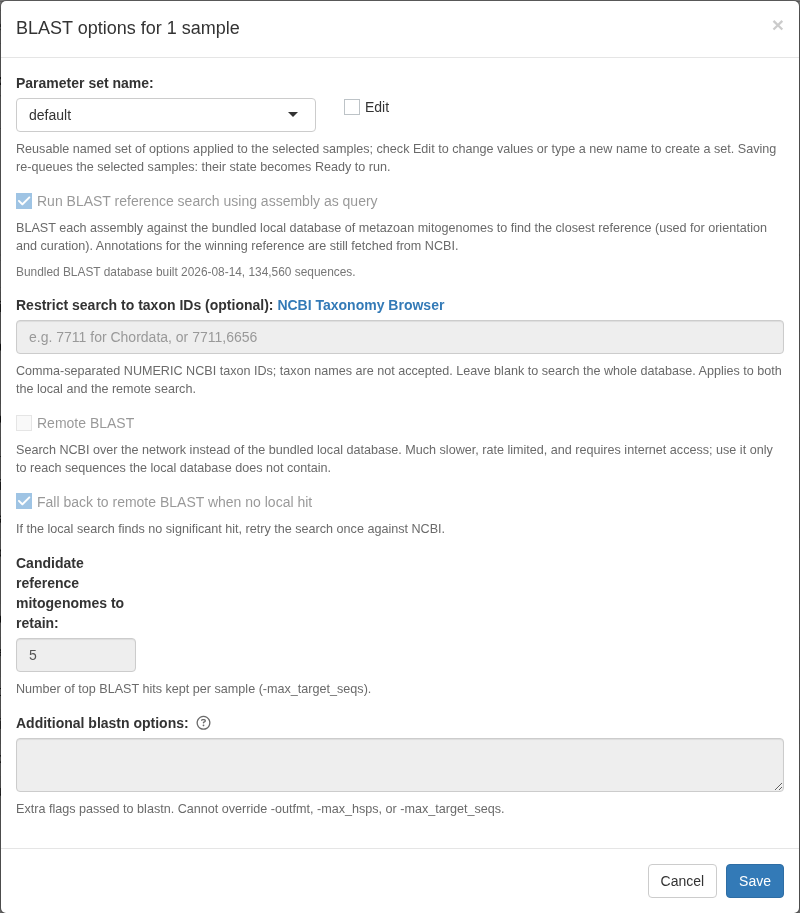
The BLAST Opts. window reports the build date and size of the bundled database, recorded the first time a local search runs in a project. Two settings change the behavior:
- Remote BLAST searches NCBI over the network instead of the local database. It is much slower and rate limited, and it is worth using only to reach sequences not contained in the BLAST database included in the MitoPilot container.
- Fall back to remote BLAST when no local hit is on by default. If the local search comes up empty, MitoPilot retries that sample once against NCBI.
You can restrict either search to particular NCBI taxon IDs (numeric IDs, not names). The Entrez query box applies to remote searches only.
Note. Local BLAST does not remove the need for an
NCBI API key. Only the search is local. Once a reference is
chosen, MitoPilot still goes to NCBI for that record’s sequence, its
annotations, and its taxonomic lineage, all of which feed into curation
and export. For projects with more than a handful of samples, set
ncbi_api_key at project setup so those requests are not
throttled.
Read the results
When the run finishes, the sample table should automatically fill in. If not try clicking the circular arrow refresh button.
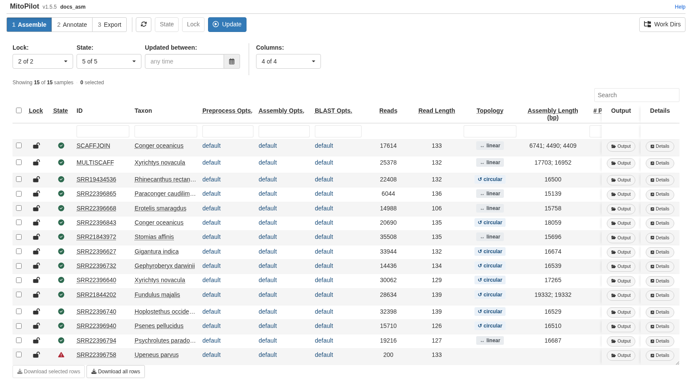
Useful columns: Reads surviving pre-processing, Topology (circular or linear), Asmb. Length, and # Paths / # Scaffolds, which tell you whether the sample came back as one clean sequence or something messier. The BLAST columns name the closest GenBank record.
output opens the sample’s results folder.
details opens the assembly itself.
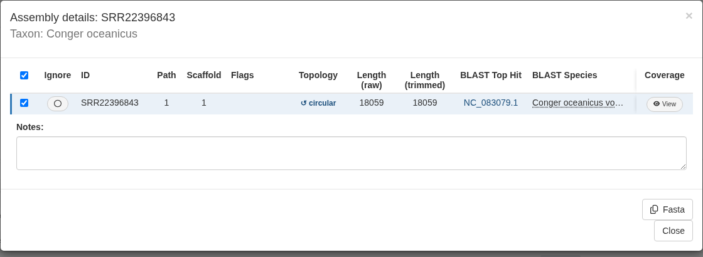
For a sample that assembled cleanly there is one row here: the
assembly, its topology and length, and the GenBank record it matched.
Select it and Fasta copies the sequence to your clipboard.
Samples that produced more than one assembly get more rows and more
tools, covered below.
Work Dirs at the top right opens a browser of the working directory that each pipeline step used for a sample, including failed attempts. It is the most reliable way to reach logs and intermediate files when something goes wrong.
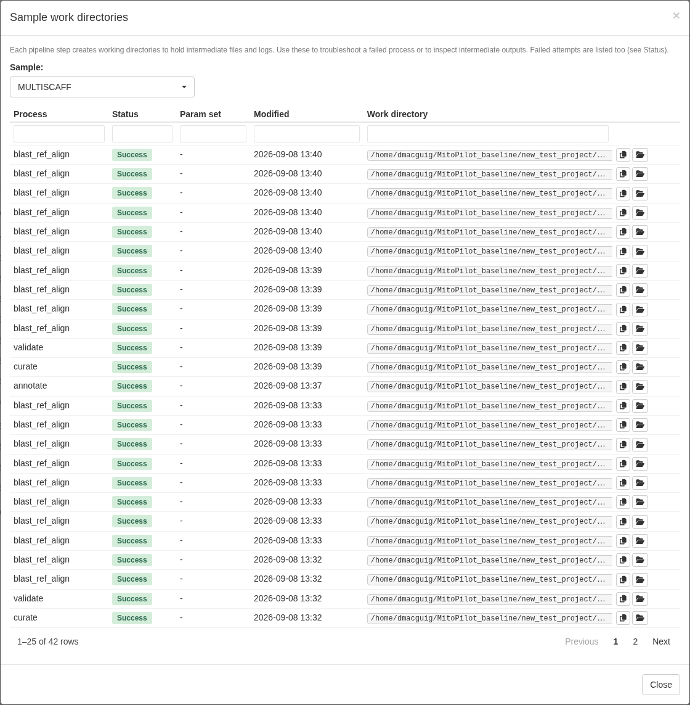
Coverage and error
In the details window, view opens a plot of read depth,
error rate, and GC content along the assembly.
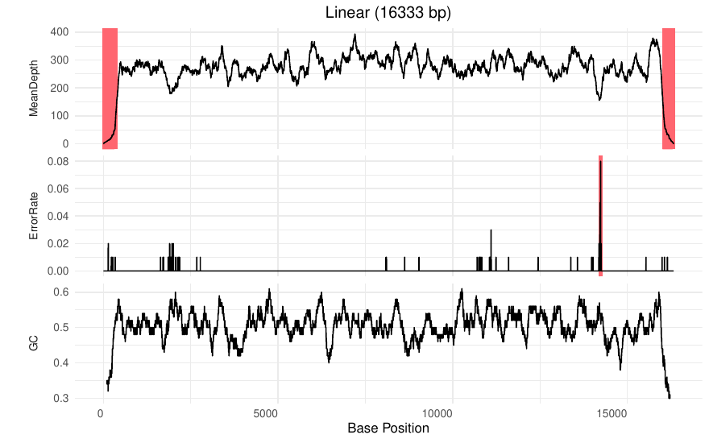
This is SRR21843972 (Stomias affinis). Depth collapses at both ends, which is why the assembly came back linear rather than circular: there were not enough reads spanning that region to close the circle. Options are more sequencing, different GetOrganelle settings, or accepting a partial mitogenome.
HYDRA Buttons that open
files. On RStudio Server, the output button opens
that sample’s results folder in the Files pane at the
bottom right of your RStudio session, and the coverage view
plot opens the PDF the same way. If you reached the app through an SSH
tunnel from a container instead, these may do nothing, because the app
tries to open them on the cluster rather than on your laptop. The
Work Dirs browser is the reliable way to reach files
either way.
Problematic samples
Three test samples are deliberately problematic, and between them they cover most of what goes wrong with real data.
Not enough data
SRR22396758 (Upeneus parvus) carries a warning icon and the
note “Insufficient sequencing depth”. Its read file was truncated to 200
reads on purpose. The threshold is the min_depth argument
at project setup. There is nothing to fix here, so leave this sample
behind when you lock the rest.
Two competing assemblies
SRR21844202 (Fundulus majalis) is flagged “Unable to resolve
single assembly from reads”: GetOrganelle found two valid paths through
a tangled assembly graph. Open details and you see both,
each 19,332 bp.
Select both and click Align.
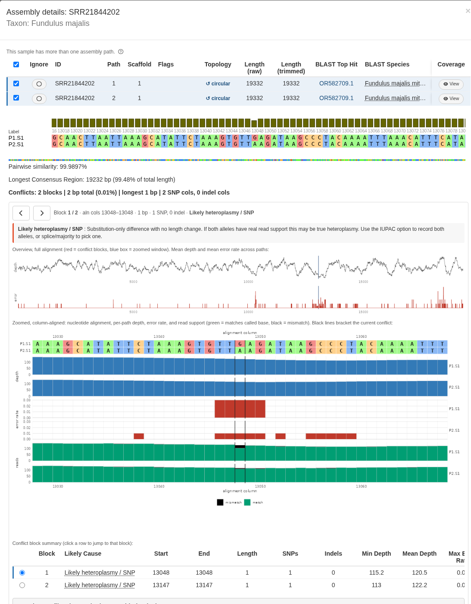
The paths are 99.99% identical, disagreeing at two single-base positions. MitoPilot classifies each conflict, here “Likely heteroplasmy / SNP”, and shows read depth and error rate around it so you can see whether both alleles have real support.
From here you can:
- Ignore the extras. Click the ignore control on the paths you do not want. Only what remains goes to annotation. This is what we do for the test project.
- Build a resolved assembly. Choose how to handle each conflict block and MitoPilot writes a single reconciled sequence as Path 0, superseding the alternatives.
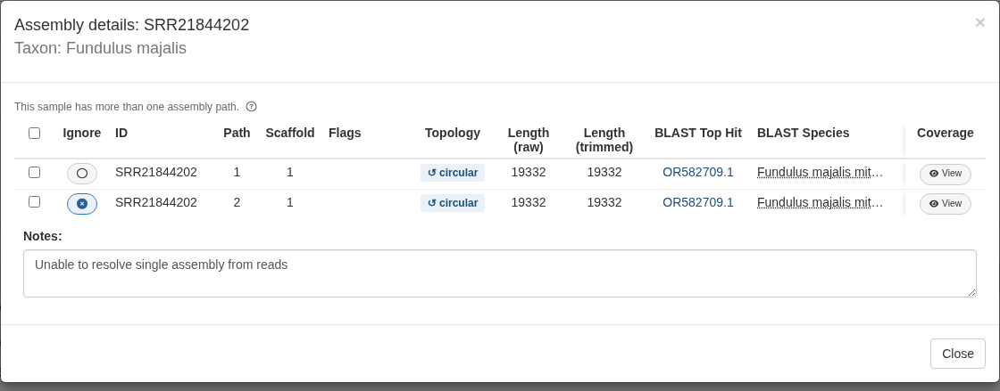
Note. Resolving discrepancies with IUPAC ambiguity codes is a provided option. But be aware that annotation may handle ambiguous bases poorly if they occur in a protein-coding region.
Fragmented assemblies
Two samples come back in pieces, but they need different treatment.
SCAFFJOIN (Conger oceanicus) is one mitogenome broken into three scaffolds. Open its details and MitoPilot shows the scaffold join editor.
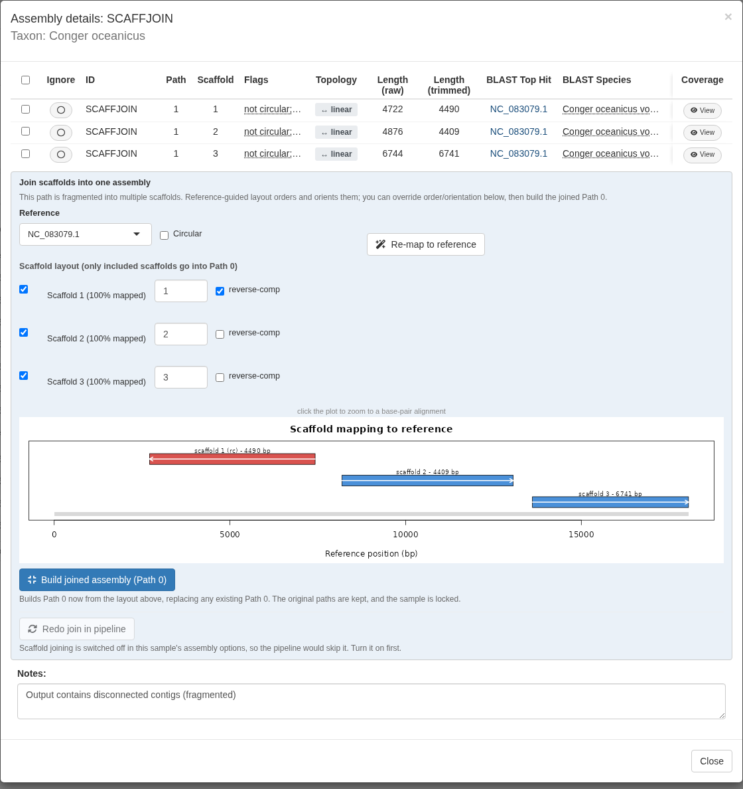
All three scaffolds map to the same reference (NC_083079.1) at 100% coverage, and the plot lays them out along the ref: scaffold 1 reversed, then scaffolds 2 and 3, with gaps between them. That is the signature of a single mitogenome that the assembler could not connect. You can override the order or orientation, tick Circular if appropriate, and then click Build joined assembly (Path 0).
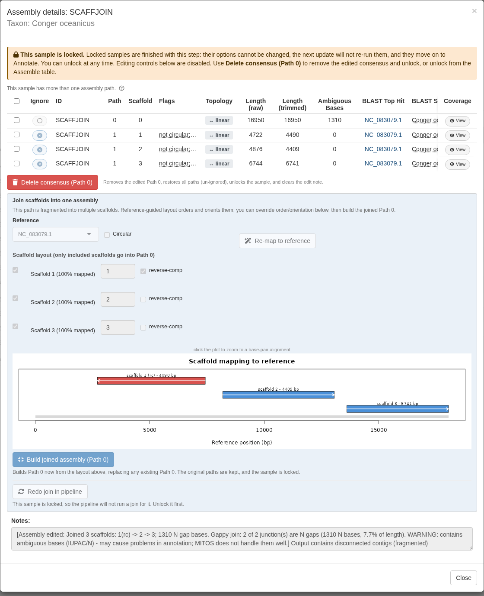
The joined Path 0 is 17,652 bp, the three original scaffolds are marked ignored, and the sample is locked automatically. The note records how it was built, including how many N bases fill the gaps. Those Ns are real missing sequence, and MitoPilot warns you about them because MITOS2 does not handle ambiguous bases well.
MULTISCAFF looks superficially similar, two scaffolds in one path, but it is the opposite case.
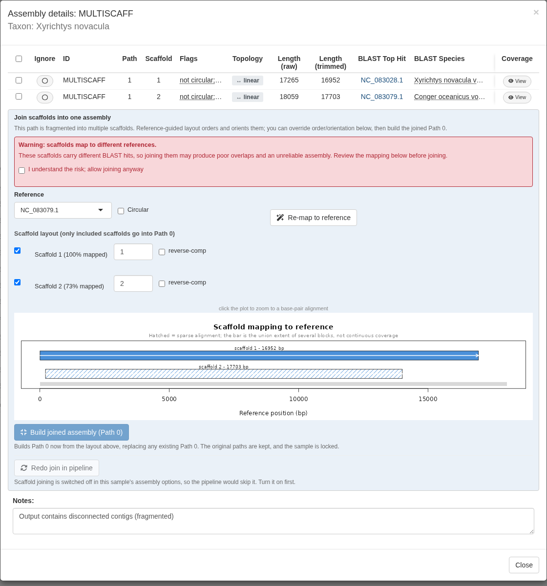
These scaffolds carry different BLAST hits, and the mapping plot shows the second one only sparsely aligned (hatched shading) to the reference. This likely represents contamination or a mixed sample. Joining them would fabricate a chimeric mitogenome. Leave them separate, and each is annotated, validated, and exported as its own record.
Tip. Fragmented does not automatically mean joinable. Check that the pieces map to the same reference in a sensible order before you join anything. Contamination, NUMTs, and naturally multipartite mitogenomes all look like “extra scaffolds” at first glance.
Lock and move on
Select every sample that assembled successfully, which is all of them except SRR22396758, and click LOCK.
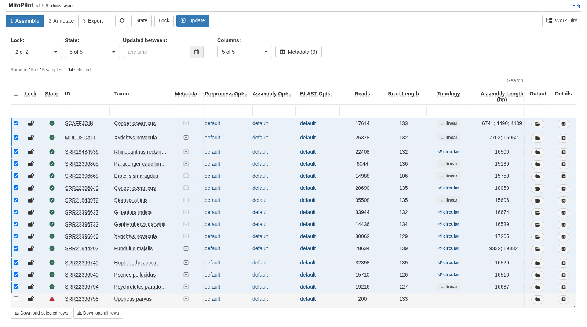
Locking freezes those samples in Assemble and releases them to the Annotate module. Switch modules with the dropdown at the top left.
Annotate
This module finds the genes, curates the gene models against reference sequences from GenBank, and validates the result against rules for your taxonomic group. It attempts to flag any issues that would cause a rejection during GenBank submission.
Each row here is one assembly unit, not one sample. A sample that kept several scaffolds or paths will be represented by several rows, and each is annotated and validated on its own.
Set the options
Annotate Opts. controls the annotation tools.

Genes come from MITOS2
(protein-coding genes, tRNAs, and rRNAs) and tRNAscan-SE
(tRNAs), with MitoFinder, ARWEN, ARAGORN, and ORFfinder available as
optional annotators. The MITOS2 reference database defaults to Chordata,
but Metazoa_RefSeq89 is the general-purpose choice for
other groups.
Curate Opts. controls what MitoPilot does with those raw annotations.

The setting that matters most is Target, the taxonomic ruleset. It sets the expected gene content, the allowed start and stop codons, the naming conventions, and the genetic code. It defaults to Actinopterygii, which is correct for the test fishes.
For your own data, pick the closest clade from the ruleset browser. The validation parameters below are the ruleset itself, laid out so you can see exactly which rules a sample is being judged against.
No ruleset for your samples? If you do not see an appropriate clade for your samples, please contact the developers. We are always looking to expand the taxonomic scope of MitoPilot.
When ready, click UPDATE and run the workflow the same way you ran Assemble.
This module is slower than Assemble. MITOS2 takes a few minutes per unit, and curation aligns every protein-coding gene against reference sequences. When working on a computing cluster with your own project, consider running this step as a job rather than directly from the MitoPilot app.
Read the results

Scroll right in the table for the columns that matter:
- PCGCount, tRNACount, rRNACount: how many of each gene type were annotated. For a vertebrate mitogenome you expect 13, 22, and 2.
- Missing: expected genes that were not found.
- Extra: genes annotated more times than the ruleset expects.
- Warnings: how many validation flags were raised. This is your work queue.
A few units stand out in the test project. For example, SRR21844202
has an extra trnW and two warnings.
SCAFFJOIN is missing atp8 and trnK and
carries eight warnings. This is an real consequence of joining scaffolds
across coverage gaps. The sequence in those gaps is set to “N”, so the
genes in those gaps cannot be annotated.
Note. The Warnings column includes dropdown at the top filters which warning types are counted. Narrow it to one warning type to pull out every sample with that problem and work through them as a batch.
Inspect a sample
Click details on any row. Here we’ll look at sample
SRR19434536.

The annotation table lists every gene with its position, strand, and
the tool that called it. The Notes column records
changes made during automatic curation, such as a start position moved
upstream or a stop codon trimmed. Warnings shows what
validation the flagged. The nt and aa buttons
copy the nucleotide or amino acid sequence to your clipboard.
The badges along the top track the sample: topology, ID verified, reviewed, problematic, and partial. The buttons at the bottom toggle them, which is how you keep track of what you have already looked at across a large project.
Below the table are three collapsible views.
Coverage Map plots read depth along the assembly with the gene models drawn below, zoomed to whichever gene you have selected. The gene bars are semi-transparent so overlapping gene models are easy to spot.

BLAST Reference Synteny lines your annotation up against the closest GenBank mitogenome, with a percent-identity bar between them. Gene order that disagrees with the reference is usually either a real rearrangement or a curation mistake. This view provides a quick way to differentiate these options.
The reference mitogenome shown here will be exported to your GenBank submission files as a note. If the best reference is a poor match, you can flag it (which inclusion as a note in the submission files) or use the dropdown menu to pick a better reference.

Alignment shows a selected protein-coding gene aligned to its reference hits.

The nucleotide boundary box shows the exact sequence at each end of the gene with the codon frame marked, along with the start and stop codons that were called. Below it, the protein alignment shows your gene (“focal”) alongside the reference proteins.
Fix what needs fixing
Click EDIT in the alignment section to nudge the start or stop position and watch the alignment respond.

By default, the + and - buttons search for
the next valid start or stop codon. You can select the
single codon button to instead nudge the position one codon
at a time. This can lead to a partial gene model with
undetermined start or stop codons.
Pressing the poly-A stop button will truncate a stop
codon to TA or T. Sometimes this is
required by GenBank to avoid overlapping gene models. When transcribed,
these genes will have their stop codon completed by the addition of the
3’ poly-A tail.
You can manually set a gene to have a undetermined start or stop
codon by clicking the Partial 5' or 3'
buttons. MitoPilot will add the appropriate format and notes to that
gene in the GenBank submission files. Best to use this sparingly, as
GenBank may not accept a submission with many “partial” gene models.
Other useful editing tools:
- Merge PCGs/rRNAs joins gene models that were split into separate pieces, which is how you handle spliced or fragmented genes.
- Auto-assign ORFs renames open reading frames found by ORFfinder based on sequence similarity with the curation database of protein-coding genes.
- Delete removes an annotation entirely. Bring back a deleted annotation using the Restore button.
- Trim unannotated ends cuts assembly overhang that carries no genes, and can be undone.
- Linearize converts a circular assembly to linear, useful when the control region assembled badly.
- Align fewer refs in the Alignment panel speeds up editing by restricting the alignment to the top five hits, which matters because the alignment is recomputed on every nudge.
Write down what you did in the Notes box; it saves automatically and is retained with the sample.
Warning. Validation warnings do not disappear when you fix the underlying problem. They record the state at the time the Annotate module ran. Use the Reviewed toggle to track what you have actually dealt with.
Export
The Export module turns finished annotations into the files GenBank needs for submission: a FASTA of the sequences and a five-column feature table of the annotations. MitoPilot allows you to export the entire mitogenomes, individual genes, or both. Export also generates GFF3 annotation files and alignment summaries.
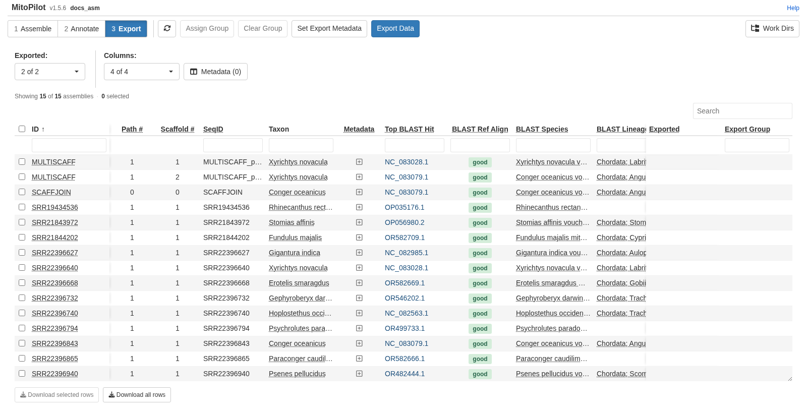
Make a group
Export works on groups, which correspond to submission batches. Select the samples you want and click ASSIGN GROUP.
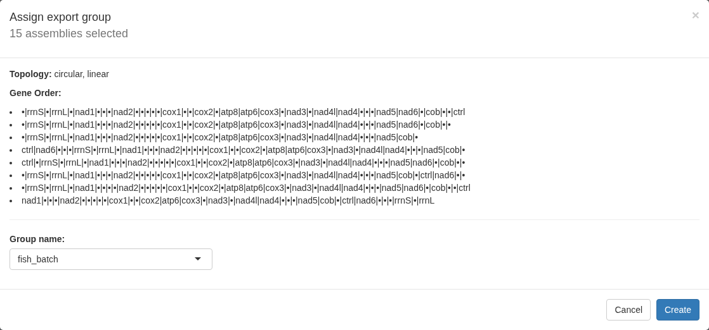
The window summarizes what you selected: how many records, which topologies, and the gene order of each. Type a name (letters, numbers, dashes, and underscores only) and click Create.
For the test project, select everything. MitoPilot then stops you:
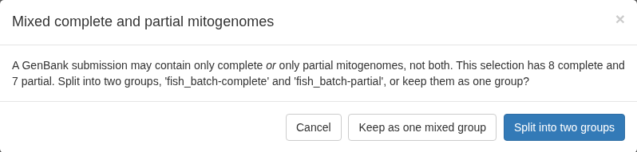
A GenBank submission may contain complete mitogenomes or partial
mitogenomes, but not both. This selection has some of each.
Split into two groups produces
fish_batch-complete and fish_batch-partial.
Note that completeness is derived from each assembly’s topology, with
circular meaning complete and linear meaning partial, unless you
overrode it using the per-sample Partial flag or the
linear_complete project setting.
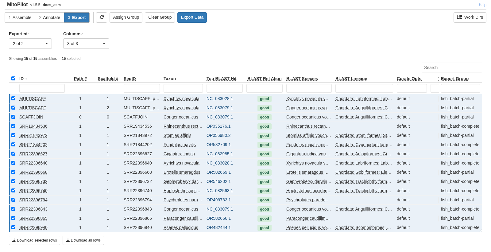
A unit can only belong to one export group at a time. CLEAR GROUP removes the selected samples from their group, and re-assigning a grouped sample asks for confirmation first, because files already written for the old group are not cleaned up.
Export
Click EXPORT DATA.
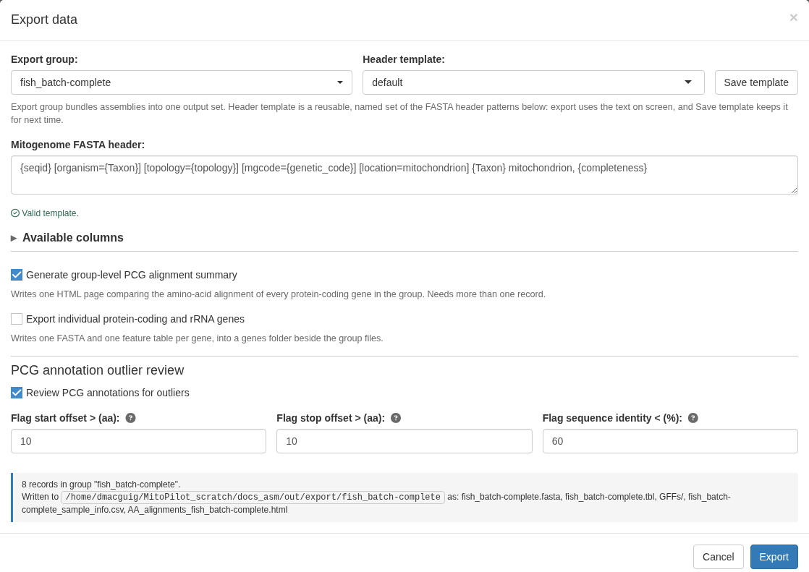
Header Template is the FASTA definition line, built
from any column in your sample data with {column_name}.
Anything you put in the mapping file at project setup is available here,
which is how voucher numbers and BioSample accessions reach the
submission files.
There are two special parameters. First, {completeness}
expands to “complete genome” or “partial genome” and belongs at the end
of the header for GenBank to parse it correctly. Second,
{seqid} takes the value in the ID column of the mapping
file and appends the scaffold/path number if that sample is exporting
multiple sequences.
Templates are validated as you type and can be saved by name for reuse.
Other options in the Export Data window:
- Generate Group-level PCG alignment summary aligns every protein-coding gene across the group and writes an HTML report. Worth the wait as a final check.
- Export individual protein-coding and rRNA genes writes per-gene FASTA files and feature tables, with their own header template. Useful for phylogenetics or single-gene submissions.
- Review PCG annotations for outliers runs a final pre-submission check described below.
Then click Export.
Note. If any sample in the group contributes more
than one record, for example a sample whose scaffolds were deliberately
kept apart, MitoPilot asks you to confirm before exporting. Each
scaffold becomes its own GenBank record with a
ID_p<path>_s<scaffold> SeqID. This allows you
to submit samples that have truly fragmented mitogenomes. Samples that
still have more than one assembly path cannot be exported at all.
The outlier review
With the review enabled, MitoPilot aligns each protein-coding gene across the group and stops on any gene where a sample looks out of line, before writing anything.
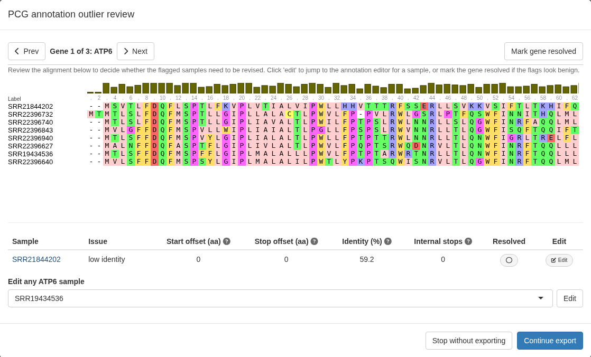
A gene is flagged when it appears truncated or extended compared to
the rest of the submission group, as determined by the
offset parameter settings.
Genes are also flagged when their identity compared the rest of the group falls below the specified threshold. In the screenshot above, SRR21844202’s ATP6 is at 59.2% identity against the others.
You can page through the flagged genes with Prev and Next, jump straight into the annotation editor for any sample with edit, mark a gene resolved once you have looked at it, or cancel the export entirely. Files are written only when you click Done, so edits made during review will appear in the exported files.
Tip. Low identity is not automatically an error. ATP8 and NAD6 are genuinely fast-evolving and routinely flag in a diverse group.
Exported files
During export, files are saved to
<project>/out/export/<group name>/:
| File | What it is |
|---|---|
<group>.fasta |
The mitogenome sequences with your header template applied |
<group>.tbl |
The five-column feature table of annotations |
<group>_sample_info.csv |
The sample metadata behind the submission |
AA_alignments_<group>.html |
The group-level protein alignment report |
GFFs/ |
One GFF3 per sample, can be reviewed using Geneious or other tools |
genes/ |
Per-gene FASTA and feature tables, if you asked for them |
The FASTA and the feature table are the two files you need for a GenBank organelle submission.
The HTML report is the file to read first.
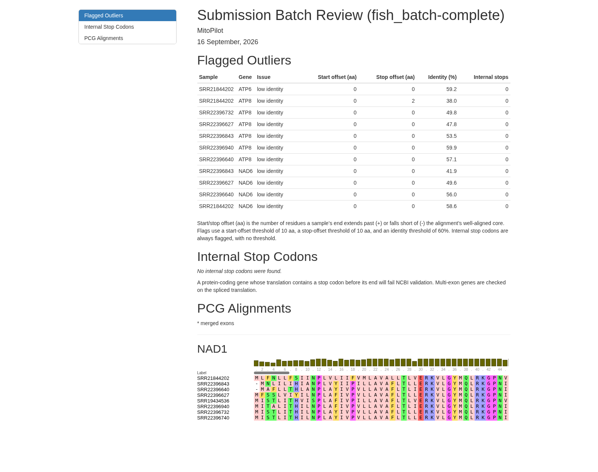
It opens with every flagged outlier in one table, then shows the alignment for each protein-coding gene across the group. Poor annotations tend to be obvious here.
HYDRA Getting files off the cluster. Export runs inside the app rather than as a cluster job. You will need to download the data to submit to GenBank.
Starting your own project
Once you are comfortable with how MitoPilot works, running your own data is mostly a matter of pointing MitoPilot at your reads and telling it what kind of organism you are working on.
What you need
- A directory of paired-end Illumina reads. Two gzipped FASTQ files per sample. The data directory does not have to be inside the project directory.
- A mapping file. A CSV describing your samples.
The mapping file
Four columns are required:
| Column | Contents |
|---|---|
ID |
Unique identifier for the sample. Used as the SeqID at export, so keep it short and free of spaces. |
Taxon |
Taxonomic information. Only included for your own benefit, so no required format. |
R1 |
File name of the forward reads (name only, not a path). |
R2 |
File name of the reverse reads. |
Any other columns you add are carried along and can be pulled into GenBank FASTA headers at export, so this is the place to put voucher numbers, BioSample accessions, collection data, and anything else your submission needs.
ID,Taxon,R1,R2,Voucher,BioSample
OCT001,Muricea elongata,OCT001_R1.fastq.gz,OCT001_R2.fastq.gz,USNM:1234567,SAMN00000001
OCT002,Leptogorgia virgulata,OCT002_R1.fastq.gz,OCT002_R2.fastq.gz,USNM:1234568,SAMN00000002You do not have to get the mapping file columns right the first time.
update_sample_metadata() adds new columns or revises the
values in existing projects. Close the app before either one, since they
need sole access to the project database. Both are described on the reference
pages.
Note. If your identifier column is not called
ID, you can pass its name with mapping_id
instead of renaming the column.
Initialize the project
library(MitoPilot)
new_project(
path = "~/my_mitogenomes/run_01",
mapping_fn = "~/my_mitogenomes/mapping.csv",
data_path = "~/my_mitogenomes/raw_data",
executor = "local"
)That is the minimum. Everything below is optional, but for anything
other than a ray-finned fish you will want at least
curate_target and custom assembly databases.
Arguments worth setting
Many of these options can also be set in the MitoPilot app. Setting them at project initilization may save you time.
curate_target picks the curation and
validation ruleset, which controls expected gene content, allowed start
and stop codons, gene naming, and the genetic code. The default is
"fish_mito". Browse the available rulesets in the curation ruleset browser and pass the
one matching your clade, for example
curate_target = "octocoral_mito".
genetic_code is normally left alone:
MitoPilot takes it from the ruleset. Set it only when you need to
override that, using an NCBI
translation table number.
custom_seeds_db and
custom_labels_db point GetOrganelle at reference
sequences for your group. The defaults are for fishes, but you can build
databases for any clade with custom_assembly_db() without
leaving R; see building custom databases.
Give absolute paths, not paths starting with ~.
assembler and
mitofinder_db switch the assembler to
"MitoFinder" and point it at its reference. The reference
must be GenBank format (.gb) and can be a local path or a
URL; the default is the zebrafish mitogenome, so supply your own for
anything that is not a fish. Leave both alone to stay on
GetOrganelle.
annotate_ref_db selects the MITOS2
reference database. The default is "Chordata";
"Metazoa_RefSeq89" is the general-purpose alternative and
is the right choice for most invertebrates.
min_depth is the minimum number of read
pairs surviving pre-processing for a sample to continue (default
2,000,000). Lower it if your reads have already been filtered or
baited.
linear_complete should be
TRUE for taxa whose complete mitogenome is genuinely
linear, will cause export to label them “complete genome” rather than
“partial”.
ncbi_api_key raises your NCBI request
limits. Worth setting even though the BLAST search itself is local,
because MitoPilot fetches annotations and taxonomic lineage for each
BLAST hit directly from NCBI. Get an API key from NCBI.
executor decides where the work runs:
"local", one of the generic cluster templates
("slurm", "sge", "pbs",
"lsf", "awsbatch"), a site profile
("NMNH_Hydra", "NOAA_SEDNA"), or a profile you
saved yourself with generate_config(). See HPC cluster support.
Below is a more complete new_project example, for an
octocoral dataset on a SLURM cluster:
new_project(
path = "~/octocorals/run_01",
mapping_fn = "~/octocorals/mapping.csv",
data_path = "~/octocorals/raw_data",
executor = "slurm",
curate_target = "octocoral_mito",
annotate_ref_db = "Metazoa_RefSeq89",
custom_seeds_db = "/data/refs/octocoral_seeds.fasta",
custom_labels_db = "/data/refs/octocoral_labels.fasta",
min_depth = 500000,
ncbi_api_key = "YOUR_KEY"
)After setting up the project, open the app from the project directory and work through Assemble, Annotate, and Export exactly as in the test project:
Tip. Run a handful of samples through the whole pipeline before analyzing hundreds. Curation settings that are wrong for your clade are much cheaper to discover on a test batch of samples.
HYDRA A Hydra project in
full. Keep the data and the project on /pool or
/scratch (not /store), and call
hydra_setup() before anything else in the session:
library(MitoPilot)
hydra_setup()
new_project(
path = "/pool/public/genomics/<<USER>>/octocorals/run_01",
mapping_fn = "/pool/public/genomics/<<USER>>/octocorals/mapping.csv",
data_path = "/pool/public/genomics/<<USER>>/octocorals/raw_data",
executor = "NMNH_Hydra",
curate_target = "octocoral_mito",
ncbi_api_key = "YOUR_KEY"
)Reference databases you pass to custom_seeds_db and
friends must be readable from the compute nodes, so put them on shared
storage rather than in your home directory.
Adding samples later
add_samples() appends new rows to an existing project
from an additional mapping file, so a project can grow as sequencing
comes in rather than being re-created from scratch.
Using pre-existing mitogenome assemblies
If your mitogenomes were assembled elsewhere, for example by mapping
to a reference in Geneious, use new_project_userAsmb()
instead. MitoPilot then skips assembly and gives you annotation,
curation, and export.
It needs two extra columns in the mapping file:
| Column | Contents |
|---|---|
Assembly |
File name of the assembly FASTA for the sample |
Topology |
circular or linear
|
new_project_userAsmb(
path = "~/my_assemblies/run_01",
mapping_fn = "~/my_assemblies/mapping.csv",
data_path = "~/my_assemblies/raw_data",
assembly_path = "~/my_assemblies/assemblies",
executor = "local"
)You still run the Assemble module, but it only maps reads to your assemblies to compute coverage and error rates.
If you have no reads at all, set no_raw_data = TRUE and
omit data_path. MitoPilot will skip read mapping entirely
and hide the coverage columns that depend on it.
Warning. A project holds either MitoPilot assemblies or externally supplied ones, never both. Use separate projects if you have a mix.